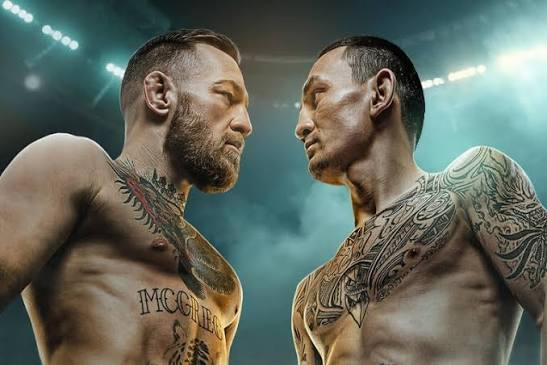
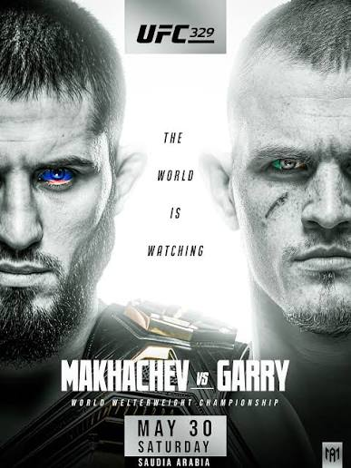

UFCnews is a modern, reader-first news page delivering crisp, trustworthy coverage of local and global events with a clean, mobile-friendly layout. It blends timely reporting, concise analysis, and rich multimedia—photos, video clips, and infographics—to make complex stories easy to follow, while personalized sections and trending tags help readers quickly find topics they care about. With clear sourcing, balanced perspectives, and community features for comments and tips, UFCnews aims to be both a reliable daily briefing and an engaging platform for curious readers.

Conor McGregor vs Max Holloway – Fight Preview Conor McGregor's long-awaited return to the UFC against Max Holloway became one of the most anticipated fights of the year. Their rivalry dates back to 2013, when a young McGregor defeated Holloway by unanimous decision despite suffering a torn ACL during the bout. Years later, both fighters entered the rematch as global MMA stars, bringing excitement to fans around the world. The rematch, however, ended in dramatic fashion after McGregor suffered a serious knee injury in the opening minute, forcing the contest to be stopped. The unexpected finish left fans disappointed, as they had hoped to witness a competitive battle between two legends. McGregor has since announced plans to undergo surgery and remains determined to return for one final UFC fight.
>
Islam Makhachev vs Ian Garry – Upcoming Fight An upcoming clash between Islam Makhachev and Ian Machado Garry has generated significant excitement among MMA fans. Makhachev is widely regarded as one of the sport's most complete fighters, combining elite wrestling, relentless pressure, and sharp striking. Garry, on the other hand, has built a reputation as a confident and technically gifted striker with impressive movement and precision. The matchup promises an intriguing contrast of styles. Makhachev will likely look to control the fight with grappling and ground dominance, while Garry aims to keep the contest standing and capitalize on his speed and striking accuracy. Fans and analysts believe this bout could have major implications for the future of the UFC welterweight division.
To view more about UFC fights and updates, click here to read the latest news and updates from UFC official website.
BACK TO HOME